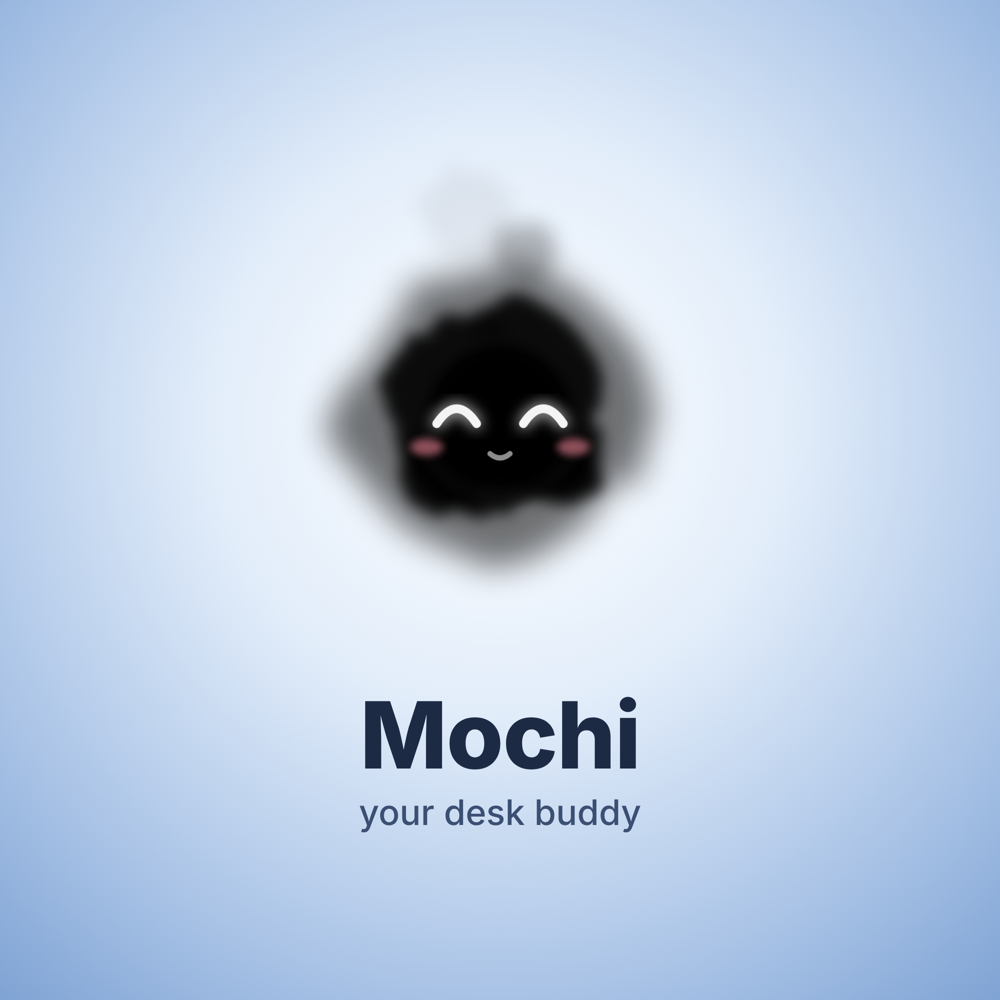
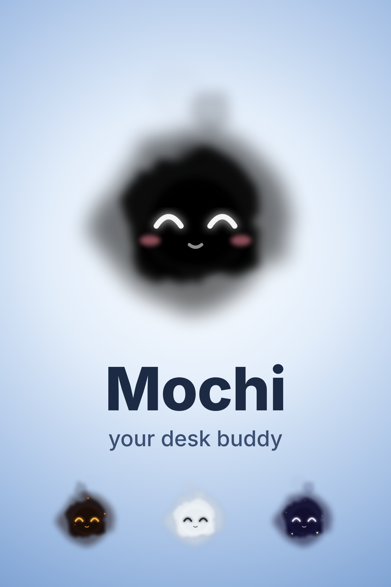
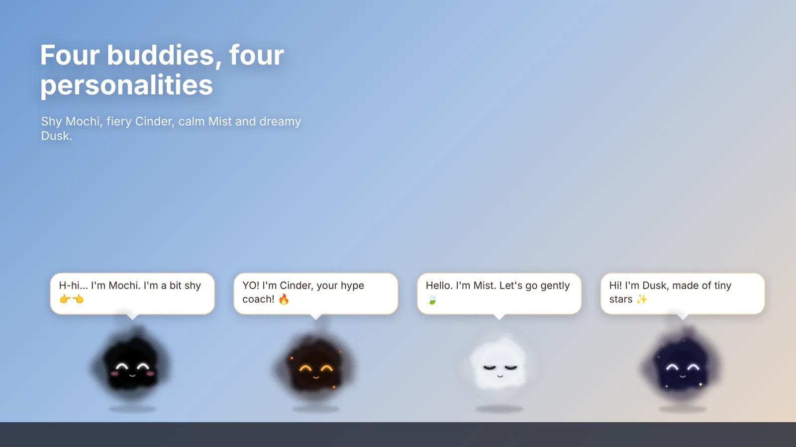
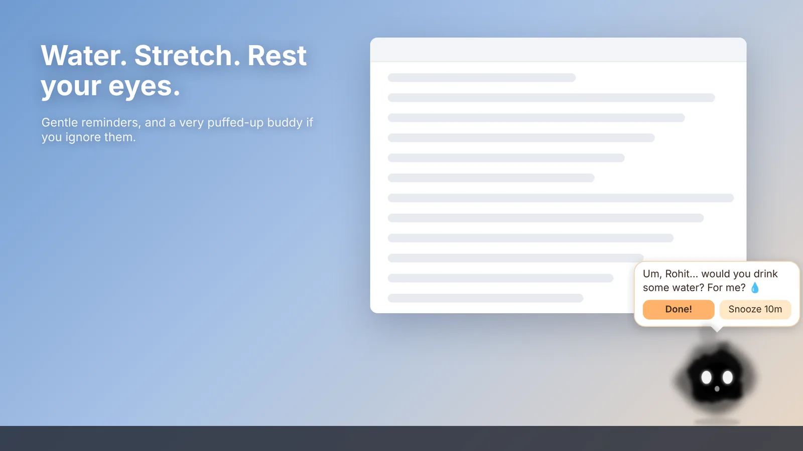
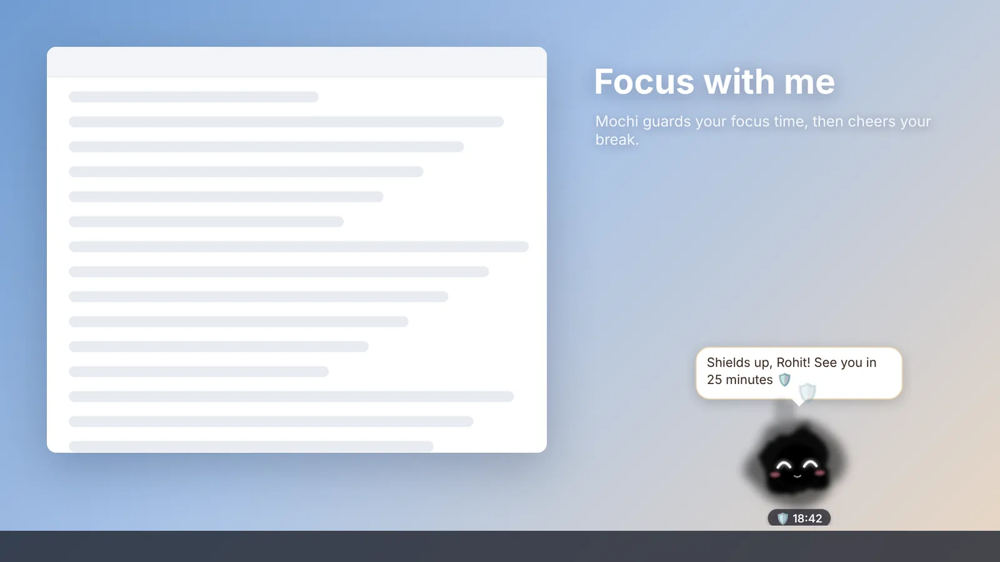

Press kit
Writing about Mochi?
Everything you need is here. For interviews or more material, email hello@mochicuddle.com.
About Mochi
Short: Mochi is a free desk buddy for Windows that reminds you to drink water, stretch and rest your eyes, and listens when work gets heavy.
Longer: Mochi is a squishy little buddy with glowing eyes that lives at the bottom of your Windows screen. It nudges you to take healthy breaks, keeps you company through long days and night shifts, eats your worries and celebrates your wins. It speaks English, Hindi and Hinglish, shares Indian helplines when someone is struggling, and keeps everything private on your own computer. Mochi is made in India by Little Smoke Studio.
- Product
- Mochi - Desk Buddy
- Maker
- Little Smoke Studio (Unorthologic LLP), India
- Founder
- Rohit Naik
- Platform
- Windows 10 and 11
- Price
- Free; company licences for teams
- Languages
- English, Hindi, Hinglish
- Get it
- Microsoft Store
- Website
- mochicuddle.com
Logos and screenshots
Click to open the full-size image. Please don't change the buddy's look or colours.


Square logo, 2160 × 2160

Poster, 1440 × 2160 Screenshot: hello
Screenshot: hello

Screenshot: the four buddies

Screenshot: reminders Screenshot: Feed me a worry
Screenshot: Feed me a worry

Screenshot: focus timer Screenshot: achievement board
Screenshot: achievement boardColours
Mochi black#000000
Navy#1B2A44
Sky#EAF1FB
Ember#FFB36B
Night#141B33